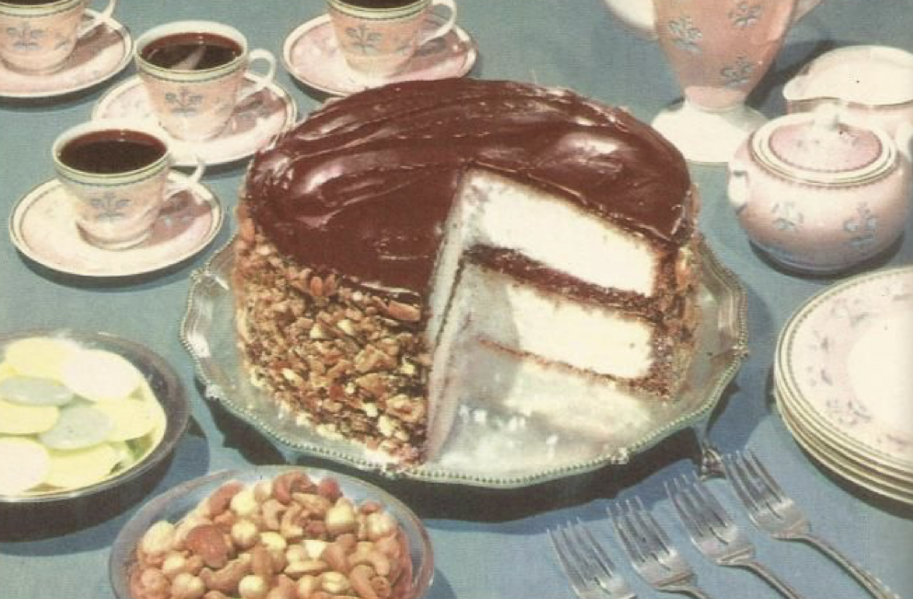

Silver Cake
Description
This Silver Cake is a classic American dessert, known for its light and fluffy texture. It's a simple yet elegant cake that's perfect for celebrations and special occasions.
Ingredients
- 1½ cups sifted cake flour
- 1/2 cup milk
- 2 teaspoons baking powder
- 1/2 teaspoon almond flavoring
- Few grains salt
- 1/2 teaspoon vanilla
- 1/3 cup shortening
- 3 egg whites
- 3/4 cup sugar
- Satiny Chocolate Frosting
- 1 cup chopped nuts
Steps
- Set oven for moderately hot, 375°F.
- Grease and flour two 8-inch round cake pans.
- Sift together flour, baking powder, and salt.
- Cream shortening and sugar until fluffy.
- Combine milk and flavorings. Add alternately with flour mixture to sugar mixture.
- Whip egg whites till stiff; fold into flour mixture. Spoon into pans. Bake 25 to 30 minutes, or till brown.
- Cool in pans 5 minutes. Remove and cool on racks. Fill and frost with Satiny Chocolate Frosting. Cover sides with nuts. Makes one 2-layer 8-inch cake.
SATINY CHOCOLATE FROSTING: Mix together 6 tablespoons flour and 6 tablespoons sugar; slowly add 2 cups milk. Stir until smooth. Cook over low heat until thick, stirring constantly. Add 1 cup butter or margarine, 1 teaspoon vanilla, and 2 squares melted unsweetened chocolate. Stir well. Cool. Makes enough to fill and frost one 2-layer 8- or 9-inch cake.